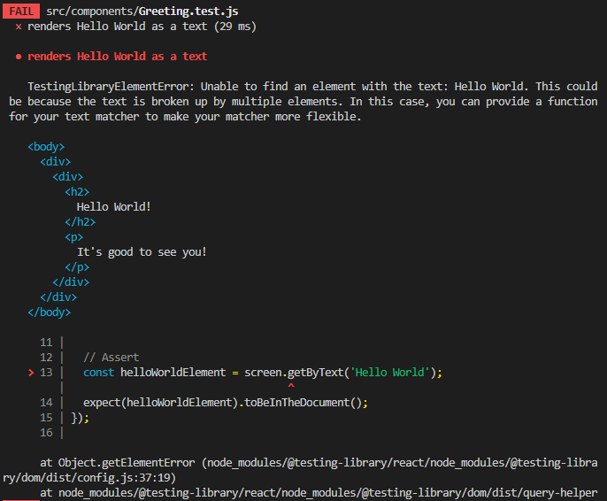
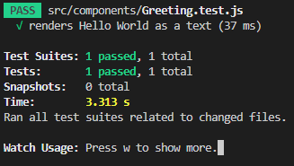

Units Tests
單元測試是最常見的前端測試，接下來將針對 React 專案進行單元測試的開發
Required Tools & Setup
在開始專寫測試之前，有 2 個環境條件需要滿足:
- 執行測試並回傳測試結果 (Jest)
首先，測試本身也是一段程式碼，所以當然需要有人去執行並回傳結果，在 React 專案中，目前最常見的就是 jest 這個 3rd library
- 模擬 React
Jest 並非 React 專屬的 library，他適用於所有前端專案，所以我們還需要 React 對應的 library 來模擬 React 的運作
1 | // package.json |
First Test
在 Units Tests 中，通常會將測試檔案以目標檔案命名，例如測試的目標檔案是 App.js，測試檔案就是 App.test.js，並先直接放在該檔案同一層資料夾中
1 | src |
另外，還會有一支 setupTests.js 檔案來載入 Tests library
1 | // setupTests.js |
當然實際上不會直接對 App.js 做測試，而是將內容封裝成不同的 component 再加以測試;這裡我們就先新增一個 Greeting.js component，當然測試檔案的名稱就是 Greeting.test.js
1 | src |
1 | // Greeting.js |
接著就是要針對這個 component 寫測試了，在測試檔案中，會包含 3 個流程，簡稱 3A:
- Arrange: 測試的目標檔案與環境，這個範例指的就是 Greeting.js 這個 component
- Act: 預期測試的使用者行為，例如按鈕點擊，當然也可以沒有
- Assert: 最後一步當然就是驗證測試的結果了
在這個測試範例中，我們希望先來簡單測試 component 中是否有 Hello World 這段文字
test()
首先，在載入測試用的 3rd library 後，會有一個 global function test，其中包含兩個參數
- 第一個參數 string: 描述這段測試
- 第二個參數 funcion: 測試流程
1 | // Greeting.test.js |
Arrange (render())
接著就是透過 render() function 指定 Arrange 測試的目標檔案
1 | import { render } from "@testing-library/react"; |
Act
使用者操作行為，這裡沒有所有可以直接忽略
Assert (screen)
最後是驗證的邏輯，首先，透過 screen 可以取得許多 function，詳情考已參考官網說明，這裡只是單純要取得文字，所以可以使用 getByText()，其中包含兩個參數
- 第一個參數: 目標文字，可以單純 hardcode string 或是使用更彈性的 regular expression
- 第二個參數: 一個 object，可以設定搜尋條件
1 | import { render, screen } from "@testing-library/react"; |
expect()
最後會透過 expect() 指定測試的條件，也就是上方透過 screen.getByText() 所指定的文字，最後再透過 toBeInTheDocument() 表示須出現在目標測試檔案中
1 | test("renders Hello World as a text", () => { |
Run Test
在撰寫完測試檔案後，就是要來實際執行這段測試了，在 package.json 中，會因為安裝了 test 3rd libraries 而新增了一個指令 test
1 | // package.json |
在 cmd 執行後會出現以下畫面
1 | $ npm test |

包含測試的目標檔案、測試的描述(test function 第一個參數)和測試的結過，如果如上的結果是失敗的，就會包含失敗的原因
那麼為什麼結果會失敗呢? 原因是 getByText() 預設是完全符合才算成功，這裡多了一個驚嘆號所以就不完全符合了，可以改成 regular expression、加上驚嘆號或是在後方的測試條件改成不須完全符合
1 | // 更改測試條件不須完全符合 |
而在測試執行後，會持續監聽測試內容，所以只要修改測試條件後，結果也會即時顯示

Grouping Tests Together With Test Suits
在上方的測試結果中，會發現包含兩個狀態 Tests & Tests Suits，Tests 單純是這個測試的結果，Tests Suits 的出現是為了解決的一個專案中，可能會有許多 Units Tests，所以如果是出自同一個 component 或是功能，可以透過 Tests Suits 將之設定為群組
describe()
將多個 Test 群組就需要透過 describe() 將欲群組的測試包起來
- 第一個參數: 同樣是測試的描述
- 第二個參數: 將測試包起來的 function
經 Tests Suits 改寫後結果如下:
1 | // Greeting.test.js |
Testing User Ineraction & State
當然實際測試不會只是這麼單純的內容，通常還會加入使用者操作以涵蓋更多使用情境，這裡我們先將 component 改寫成當 button 點擊後，會改變顯示的內容
1 | // Greeting.js |
測試情境就可以區分成按鈕點擊前與點擊後，第一種情境是在點擊前，很單純的不需要使用者操作行為，直接判斷點擊錢是否出現預期文字
1 | // Greeting.test.js |
第二種就需要判斷使用者在操作後所顯示的內容了，所以需要 import 另外一個 object useEvent，其中包含許多 user event，在這次的範例就是 button click，可以透過另一個 function getByRole() 指定 HTML element
Assert 的部分因為在點擊後，這個 element 就會消失，因此可以改使用 queryByText()，在這個 element 不在時會回傳 null，toBeInTheDocument() 也可以改成 toBeNull()
1 | test('does not renders "good to see you" if the button was clicked', () => { |
Testing Connected Components
隨著專案功能不斷擴大，component 會因應需求不斷切分，所以常見的 component 不會只有一層，如果上方動態顯示的文字改由一層 component 如下
1 | // Output.js |
如果只是單純的顯示應用，上方所寫的測試內容可以完全不需要更改，但如果 component 邏輯變得更加複雜，就會將 component 的測試在抽離出去，如 Output.test.js
Testing Asynchronous Code
在前端開發中，多數資料並非靜態，而是透過非同步的方式由 server 傳送再進一步顯示
1 | // Async.js |
在撰寫測試時，如果以非同步資料顯示作為測試的結果就會出錯，因為測試程式碼並不知道這筆資料是會延遲一段時間後才送達，所以這裡的 getAllByRole() 需要改成 findAllRole()，差別在於 findAllRole() 會回傳一個 promise，期待二個參數同樣為測試條件，第三個參數為延遲秒數，預設為 1 秒;而 test function 也需要改成 async function
1 | describe("Async component", () => { |
Working with Mocks
上述對於非同步事件的測試看似一切正常了，但這裡有一個問題是，在執行測試時，其時會反覆執行 component 中的 function，當遇到非同步事件時，除了會不斷產生 request 之外，更重要的是如果這個 request 是對資料進行新增或刪除等動作，測試的過程就不會斷更改資料庫的資料
很顯然的，這不是我們期待的行為，Units Tests 的目的是測試 component 行為，而不是測試 Web API (fetch) 或其他 server API;Jest 為了解決這個問題，提供了在執行測試時，取代這些行為與資料的 mocks
首先，將 window.fetch() 取代為 ject.fn()，並呼叫 mockResolvedValueOnce() 定義 resolved 後所接收到的資料，透過 fetch API 所接收到的資料會先以 async function json() 將資料轉為 JS object，其中所回傳的資料就是我們可以自由定義的 mock data
1 | // Async.test.js |
透過這樣的改寫後，在執行測試時，就不會真的送出 request，而且還可以準備多組假資料以模擬不同的情境
Initialize Test Environment
上述不希望在執行測試時被出發的事件，可以在根目錄上建立一個 src/setupTests.js 的檔案，這支檔案會在執行所有測時前先被執行
1 | // src/setupTests.js |
而如果在新增 src/setupTests.js 檔案前就執行 eject (scripts in package.json)，package.json 就不會建立任何關聯到這支檔案上，那麼就需要手動補上以下設定:
1 | // package.json |
資料參考
React - The Complete Guide (Incl Hooks, React Router, Redux)
@testing-library/react
jest